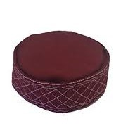

UTTARAKHAND'S GARHWALI TOPI
Garhwali Topi is a traditional cap of the Himalayan region of Uttarakhand. It is light weight and an integral part of the Pahadi men's ensemble in the hills of Kumaon and Garhwal. Worn at first as a necessity to protect from the harsh weather, or carrying load on the head, the Garhwali Topi has now become an iconic part of the traditional Garhwali attire.
